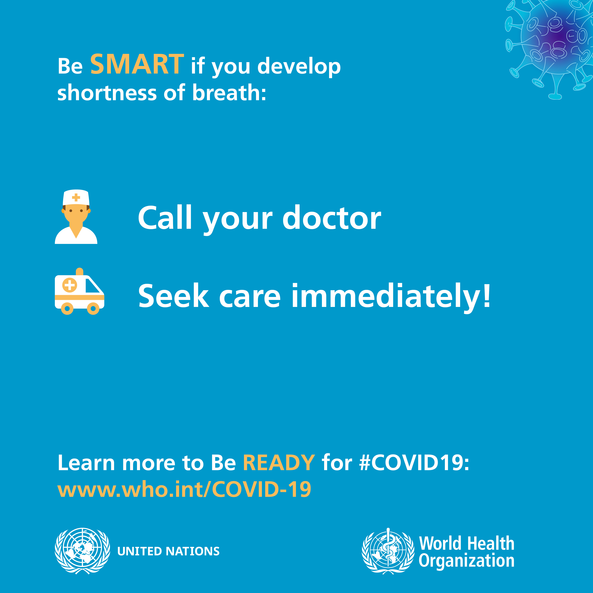

Protect yourself and others from COVID-19
If COVID-19 is spreading in your community, stay safe by taking some simple precautions, such as physical distancing, wearing a mask, keeping rooms well ventilated, avoiding crowds, cleaning your hands, and coughing into a bent elbow or tissue. Check local advice where you live and work. Do it all!
What to do to keep yourself and others safe from COVID-19
Maintain at least a 1-metre distance between yourself and others to reduce your risk of infection when they cough, sneeze or speak. Maintain an even greater distance between yourself and others when indoors. The further away, the better.
Make wearing a mask a normal part of being around other people.
Here are the basics of how to wear a mask:
Clean your hands before you put your mask on, as well as before and after you take it off.
Make sure it covers both your nose, mouth and chin.
Here are some specifics on what type of mask to wear and when, depending on how much virus is circulating where you live, where you go and who you are.
Wear a fabric mask unless you’re in a particular risk group. This is especially important when you can’t stay physically distanced, particularly in crowded and poorly ventilated indoor settings.
Wear a medical/surgical mask if you:
Are over 60,
Have underlying medical conditions,
Are feeling unwell, and/or
Are looking after an ill family member.
For more public advice on masks, read our Q&A and watch our videos. There is also a Q&A focused on masks and children.
For health workers, medical masks are essential personal protective equipment when engaging with patients with suspected, probable or confirmed COVID-19. Respirator masks (such as FFP2, FFP3, N95, N99) should be used in settings where procedures generating aerosols are performed and must be fitted to ensure the right size is worn.
Find out more about the science of how COVID-19 infects people and our bodies react by watching or reading this interview.
How to make your environment safer
Avoid the 3Cs: spaces that are closed, crowded or involve close contact.
Outbreaks have been reported in restaurants, choir practices, fitness classes, nightclubs, offices and places of worship where people have gathered, often in crowded indoor settings where they talk loudly, shout, breathe heavily or sing.
The risks of getting COVID-19 are higher in crowded and inadequately ventilated spaces where infected people spend long periods of time together in close proximity. These environments are where the virus appears to spreads by respiratory droplets or aerosols more efficiently, so taking precautions is even more important.
Meet people outside. Outdoor gatherings are safer than indoor ones, particularly if indoor spaces are small and without outdoor air coming in.  For more information on how to hold events like family gatherings, children’s football games and family occasions, read our Q&A on small public gatherings.
Avoid crowded or indoor settings but if you can’t, then take precautions:
Open a window. Increase the amount of ‘natural ventilation’ when indoors.
WHO has published Q&As on ventilation and air conditioning for both the general public and people who manage public spaces and buildings.
Wear a mask
For more information on how to hold events like family gatherings, children’s football games and family occasions, read our Q&A on small public gatherings.
Avoid crowded or indoor settings but if you can’t, then take precautions:
Open a window. Increase the amount of ‘natural ventilation’ when indoors.
WHO has published Q&As on ventilation and air conditioning for both the general public and people who manage public spaces and buildings.
Wear a mask
Don’t forget the basics of good hygiene
Regularly and thoroughly clean your hands with an alcohol-based hand rub or wash them with soap and water. This eliminates germs including viruses that may be on your hands.  Avoid touching your eyes, nose and mouth. Hands touch many surfaces and can pick up viruses. Once contaminated, hands can transfer the virus to your eyes, nose or mouth. From there, the virus can enter your body and infect you.
Cover your mouth and nose with your bent elbow or tissue when you cough or sneeze. Then dispose of the used tissue immediately into a closed bin and wash your hands. By following good ‘respiratory hygiene’, you protect the people around you from viruses, which cause colds, flu and COVID-19.
Clean and disinfect surfaces frequently especially those which are regularly touched, such as door handles, faucets and phone screens
Avoid touching your eyes, nose and mouth. Hands touch many surfaces and can pick up viruses. Once contaminated, hands can transfer the virus to your eyes, nose or mouth. From there, the virus can enter your body and infect you.
Cover your mouth and nose with your bent elbow or tissue when you cough or sneeze. Then dispose of the used tissue immediately into a closed bin and wash your hands. By following good ‘respiratory hygiene’, you protect the people around you from viruses, which cause colds, flu and COVID-19.
Clean and disinfect surfaces frequently especially those which are regularly touched, such as door handles, faucets and phone screens
What to do if you feel unwell
Know the full range of symptoms of COVID-19. The most common symptoms of COVID-19 are fever, dry cough, and tiredness. Other symptoms that are less common and may affect some patients include loss of taste or smell, aches and pains, headache, sore throat, nasal congestion, red eyes, diarrhoea, or a skin rash. Stay home and self-isolate even if you have minor symptoms such as cough, headache, mild fever, until you recover. Call your health care provider or hotline for advice. Have someone bring you supplies. If you need to leave your house or have someone near you, wear a medical mask to avoid infecting others. If you have a fever, cough and difficulty breathing, seek medical attention immediately. Call by telephone first, if you can and follow the directions of your local health authority. Keep up to date on the latest information from trusted sources, such as WHO or your local and national health authorities. Local and national authorities and public health units are best placed to advise on what people in your area should be doing to protect themselves.